The Style-Line gallery
A closer look at
custom living.
Kitchens, bathrooms, and cabinetry made to complement the home.
Selected spacesScroll to explore
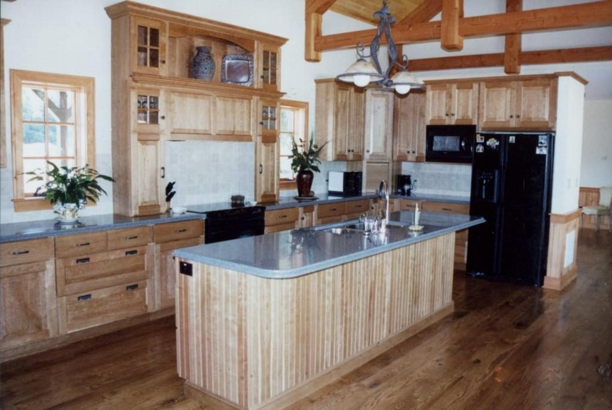

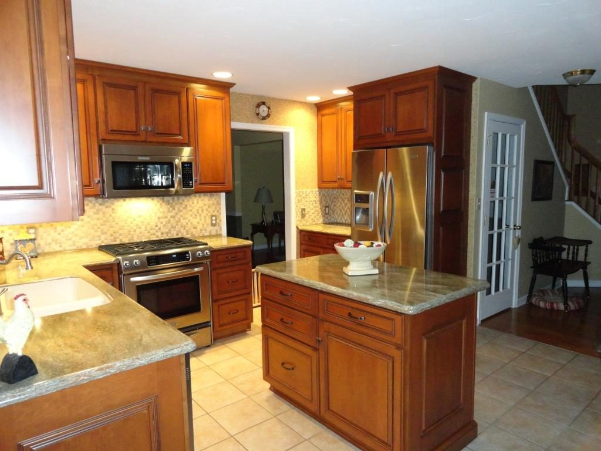
The collection.
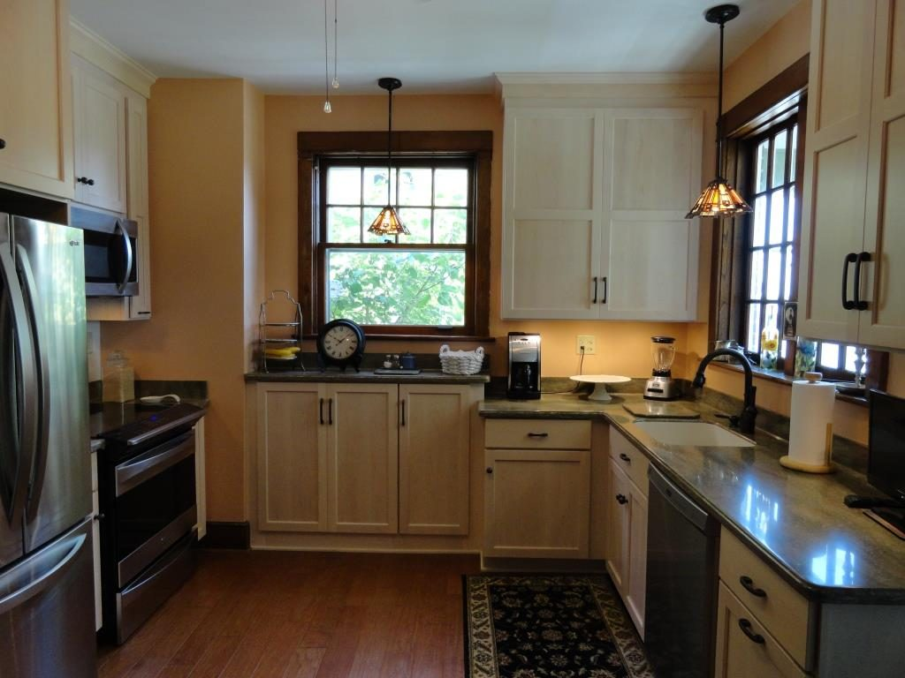
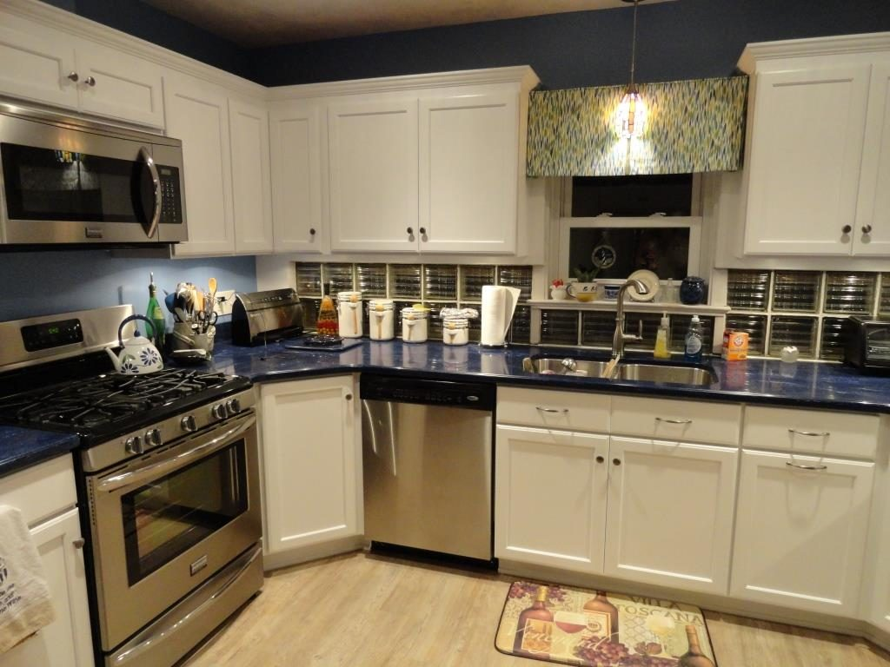
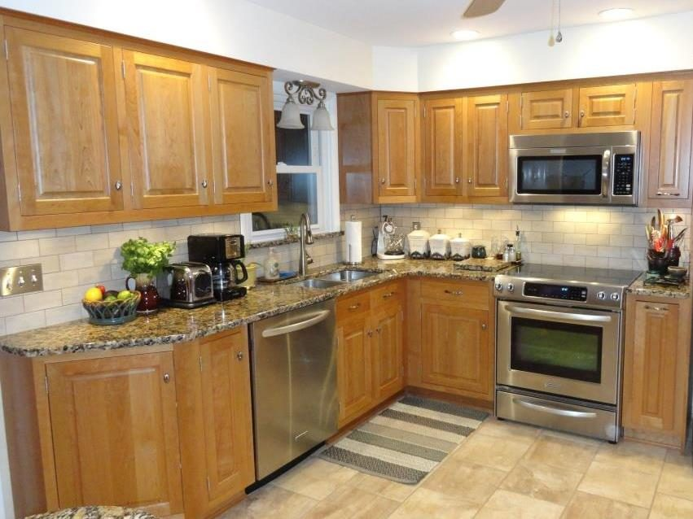
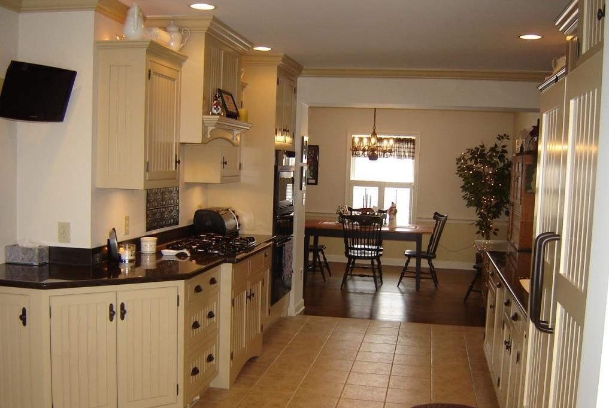
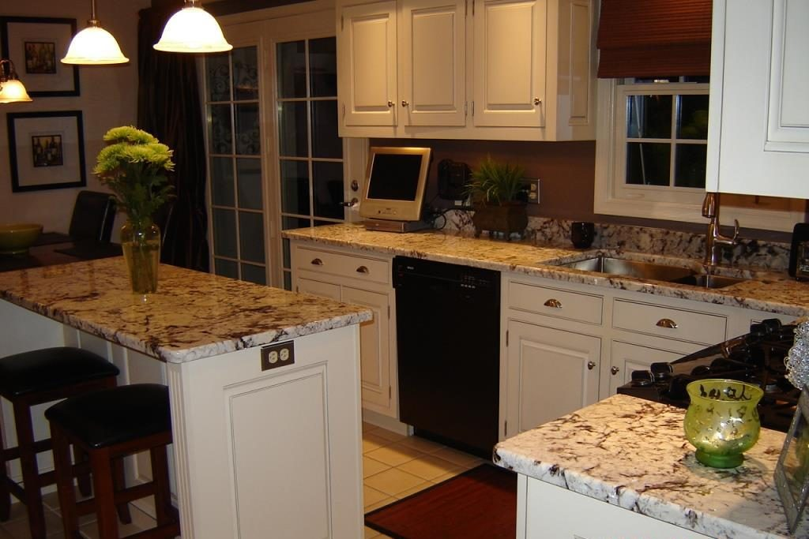
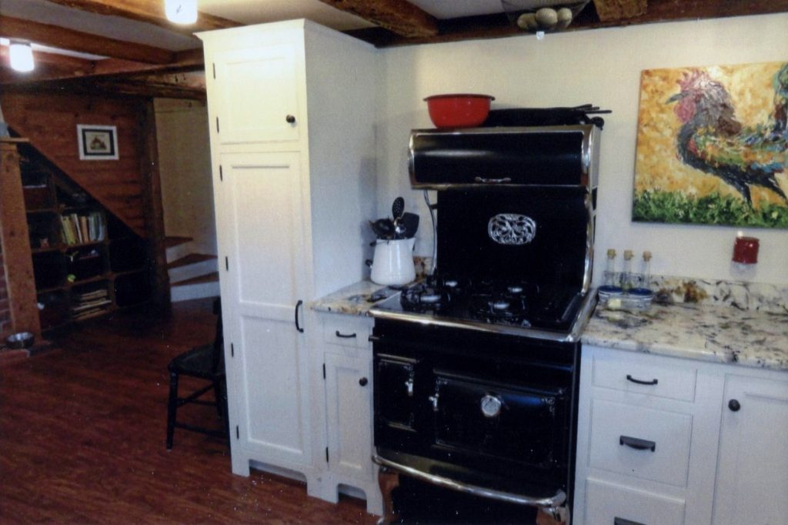
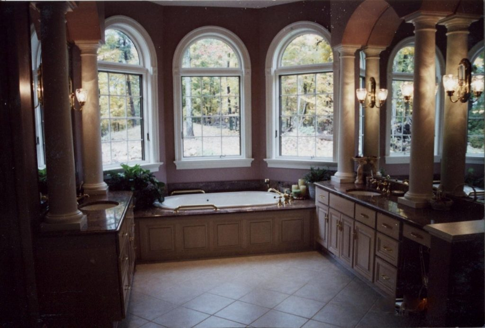
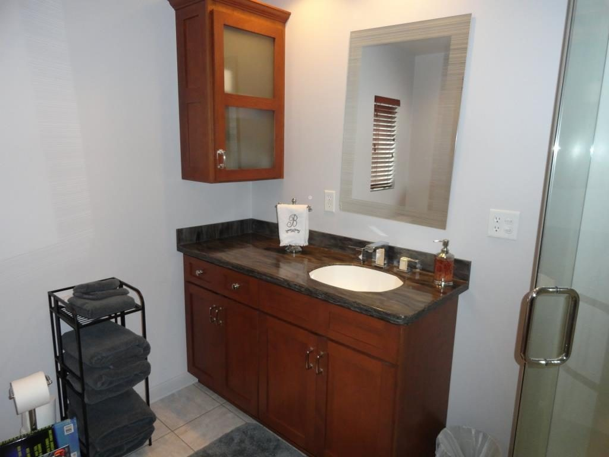


Kitchen details / 01—12
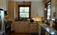
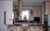
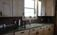
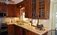
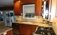
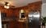
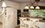
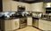
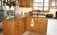
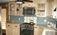
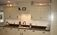
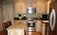